87旧版洞见scene公版✓ 判官过审把障碍本身变成行动的目标
🎬 你觉得障碍是坏事？马可说：你搞错了，障碍才是你真正要走的路。
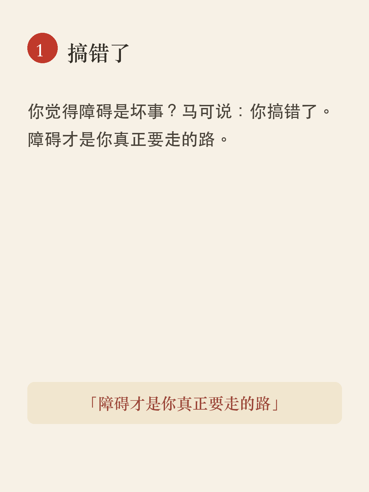
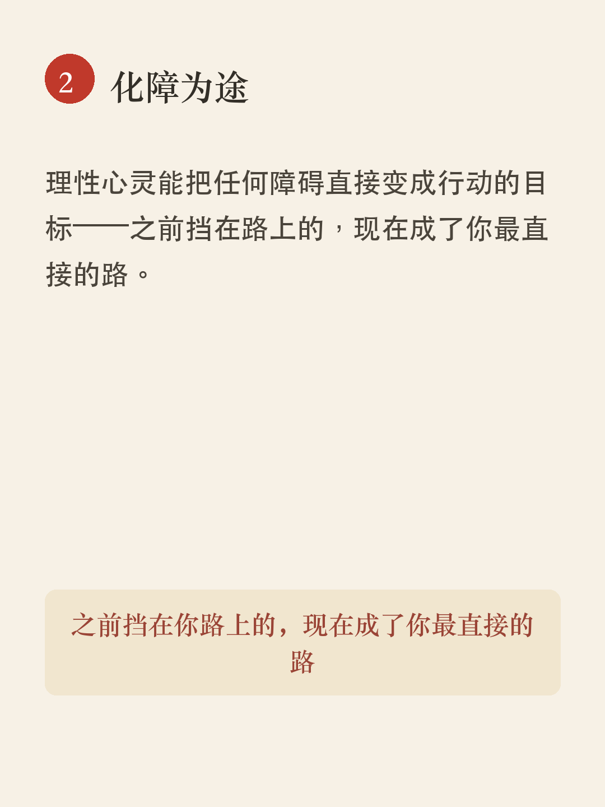
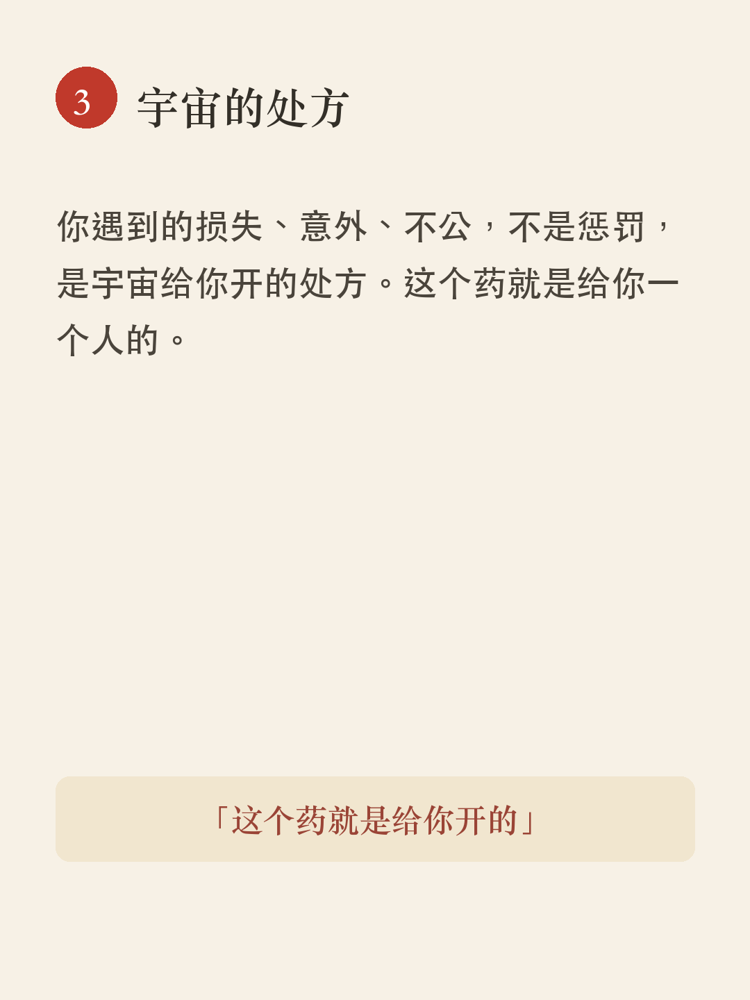
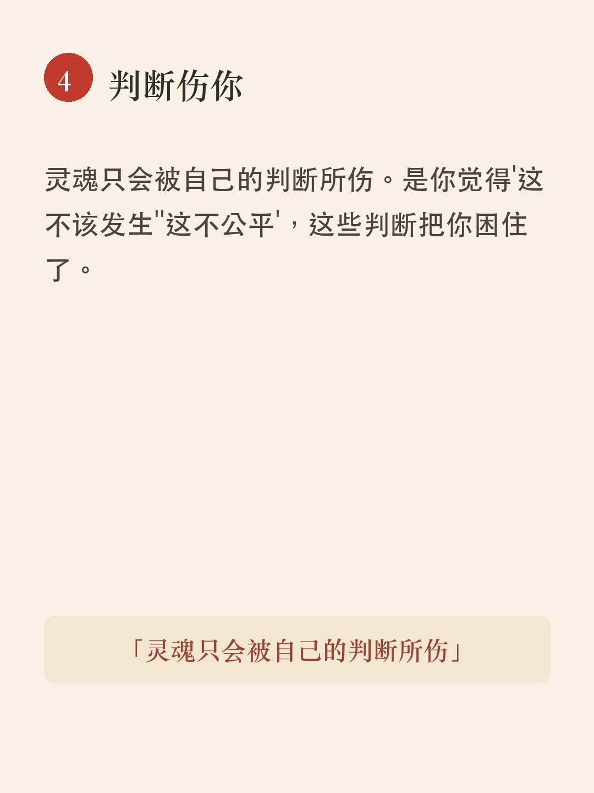
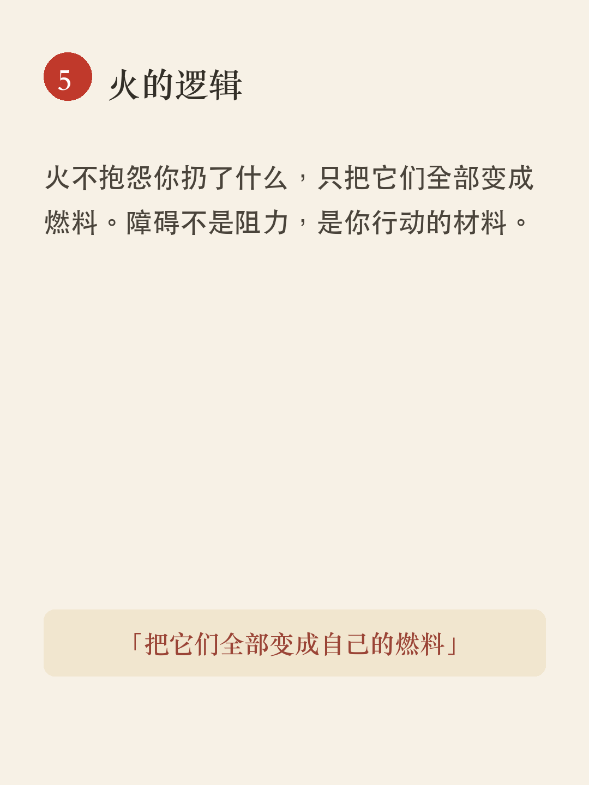
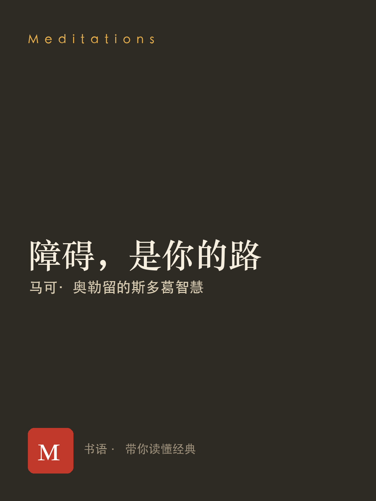
📄 配文·钩子（不剧透）
马可·奥勒留在《沉思录》里说了一句话，我第一次读到愣住了——障碍，才是你的路。理性心灵有一种能力：能把任何障碍变成行动的目标。不是绕过去，不是忍过去，而是直接把它变成行动本身。所以下次你被什么卡住，别急着绕开。停下来问自己：这个东西，能不能成为我接下来要做的事？它挡在你面前，也许恰恰是因为，你该往这里走。口播稿全文
你觉得障碍是坏事？
马可·奥勒留说：你搞错了。障碍才是你真正要走的路。
在《沉思录》中（第五卷），他写下了这么一段话，我第一次读到的时候愣住了——他说，理性心灵有一种特殊的能力，它能把任何障碍都变成自己的目标。不是绕过去，不是忍过去，而是直接把它变成行动本身。他说："what before was the impediment, is now the principal object of her working"——之前那个障碍，现在成了理性心灵行动的主要对象；"that which before was in her way, is now her readiest way"——之前挡在你路上的，现在成了你最直接的路。
这话听起来像心灵鸡汤对不对？但马可不是在给你打气，他是在陈述一个斯多葛主义的底层逻辑。
他打了个比方。他说这就像医生治病——医生会根据不同病人的情况开出不同的处方，有人要骑马、有人要洗冷水澡、有人要赤脚走路。你觉得这些是折磨吗？它们是治疗。宇宙自然对每个人也是这样安排的。你遇到的那些损失、那些意外、那些不公——不是宇宙在惩罚你，是宇宙在给你开处方。
这个处方是给你一个人的，别人的药方跟你不一样。所以当你抱怨"为什么偏偏是我"的时候，马可会说：因为这个药就是给你开的。
那理性心灵怎么做到的？它凭什么能把障碍变成燃料？
马可说，因为灵魂只会被自己的判断所伤。外部事物——无论是疾病、背叛、失败还是别人的恶意——它们本身触碰不到灵魂。是你对这件事的解读，让你痛苦。是你觉得"这不该发生"，"这不公平"，"我被针对了"，这些判断把你自己困住了。
而理性心灵呢？它有一个能力，叫做"从不可行的转向可行的"。遇到障碍，它不问"为什么挡我"，它问"那我现在能做什么"。这个转向一发生，障碍的性质就变了——它不再是阻力，它成了你行动的材料。
就像火一样。火不会抱怨你往里扔了什么，湿木头也好、碎屑也好，火只做一件事：把它们全部变成自己的燃料。你越烧，它越旺。
所以马可说的"化障为途"，不是让你乐观一点、想开一点。那太浅了。他的意思是：当你真正用理性去面对一个障碍的时候，那个障碍本身就会成为你德行实践的现场。他把真正的善定义为审慎、节制、公正、勇敢——而这些德行，恰恰要在障碍面前才能被激活。
他在书中反复自勉：外物不触心，障碍可转为实践之材。
所以下次你被什么卡住的时候，别急着绕开它。停下来问自己一句：这个东西，能不能成为我接下来要做的事？
它挡在你面前，也许恰恰是因为，你该往这里走。
84旧版映照scene公版✓ 判官过审对蜂巢不好的，对蜜蜂也绝不可能好
🎬 你觉得个人的不幸和社会大局有关系吗？马可说，有，而且大到你无法想象。
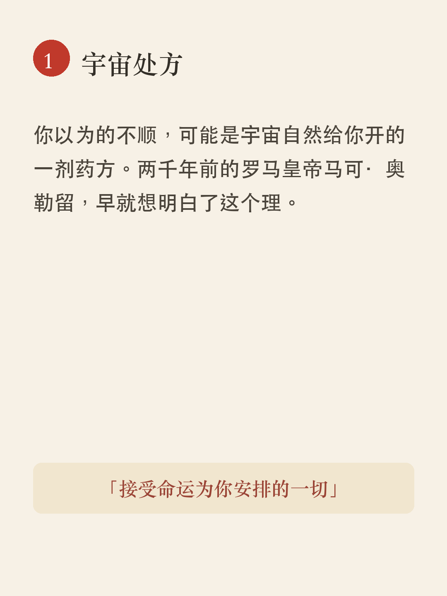
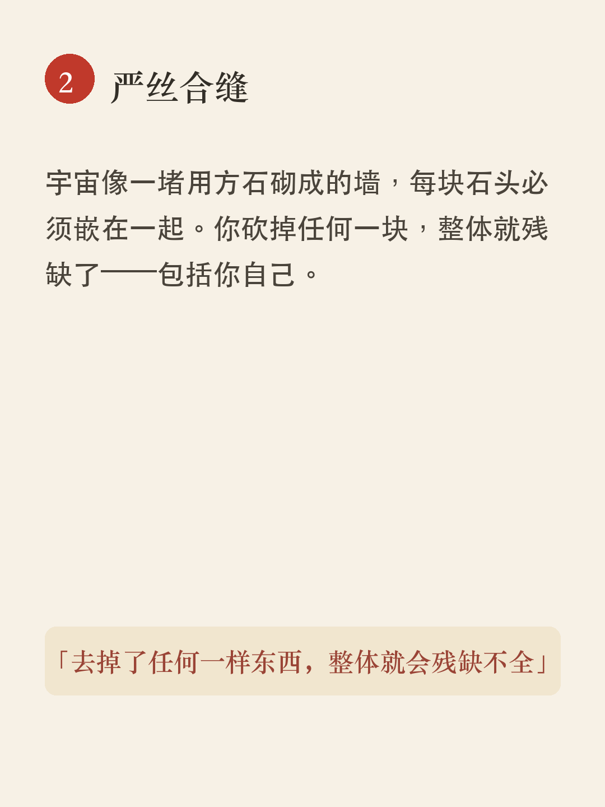
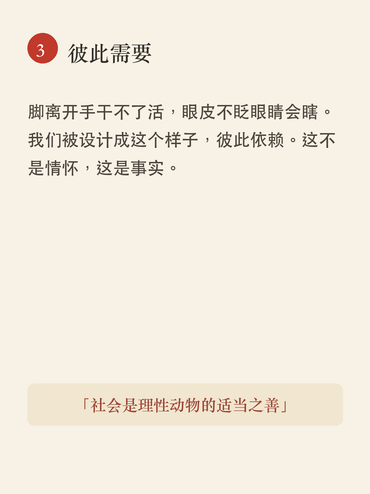
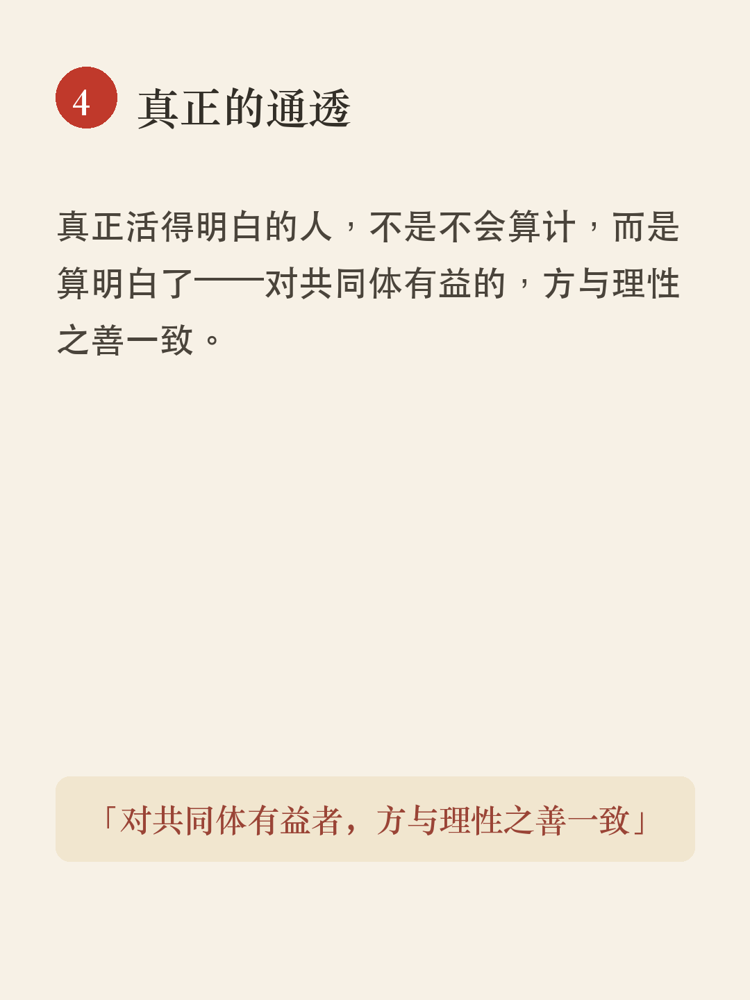
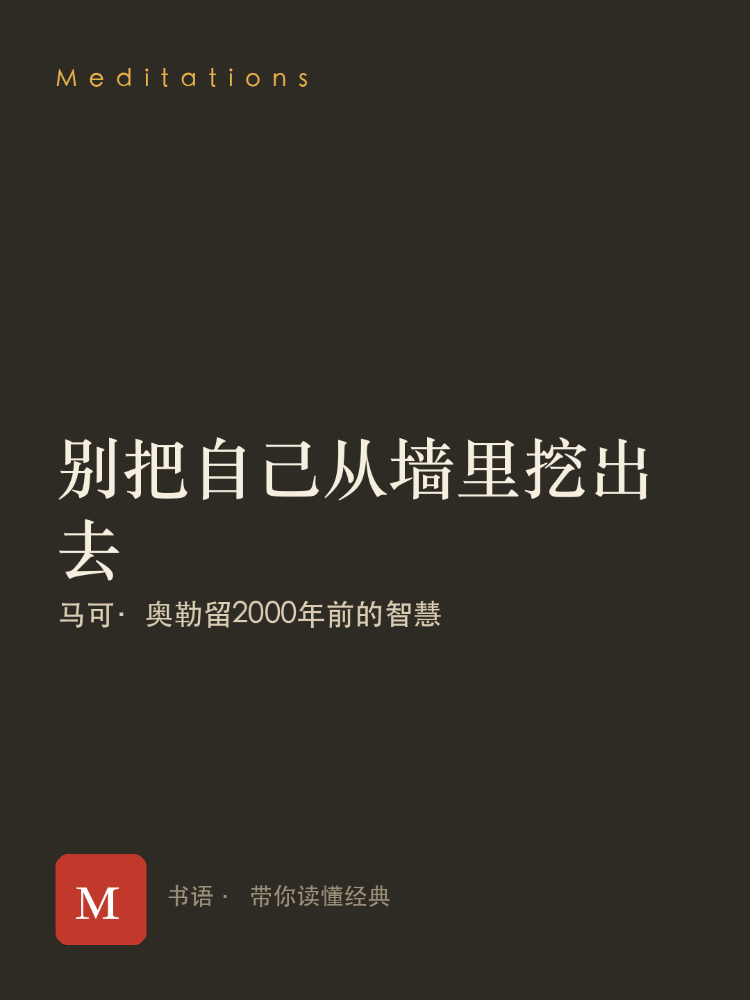
📄 配文·钩子（不剧透）
两千年前，一个罗马皇帝在《沉思录》里讲了一个让我愣了很久的道理：
你以为可以躲，可以精致利己，可以不管别人死活。
但你忘了——
宇宙是一堵严丝合缝的墙，你是那块石头。
当你把自己从整体里切割出去，你不是赢了，你是成了那个让整体残缺的部分。
所以下次觉得世界亏欠你的时候，不如换个角度：能不能把这当作宇宙给我开的一剂药方？口播稿全文
你有没有想过，你今天的不顺，可能是宇宙自然给你开的一剂"药方"？
马可·奥勒留，两千年前的罗马皇帝，在《沉思录》里讲过一个道理，我第一次读到的时候愣了很久。他说，你要接受命运为你安排的一切，因为那些看似不顺的事，其实都在趋向于"宇宙整体的福祉与健康"。而一旦有什么被排除，整个宇宙就会残缺不全。
这句话听起来有点绕，但细想下去，它戳破了一个我们每个人都容易掉的坑——总觉得只要顾好自己就行了，别人怎么样跟我无关。
马可不是这么想的。他在书里反复讲：个体和整体，不是分开的两件事。他打了个比方，说整个宇宙就像一堵用方石砌成的墙，所有的石头必须严丝合缝地嵌在一起，彼此和谐。而我们每个人，就是这块石头。因为——"去掉了任何一样东西，整体就会残缺不全。"而当你对任何发生的事感到不满时，你其实就在某种程度上切断了与整体的联结。
所以他才说，与共同自然对立，就是切断与整体的连贯。你以为你可以躲，可以精致利己，可以不管别人的死活——但你忘了，宇宙的安排自有其目的。
马可还说了另一句话：**"社会是理性动物的适当之善，因为我们生来就是为了社群。"** 你见过哪只手能单独完成所有事的？脚离开手干不了活，眼皮不眨眼睛会瞎。我们被设计成这个样子，彼此需要，彼此依赖。这不是情怀，这是事实。
两千年前，一个坐在皇位上的人，能把这个道理想得这么透，不容易。更难得的是，他自己就是那个"既得利益者"，按理说最该维护现状、最该自私才对。但他没有。他接受了宇宙给他安排的一切作为处方，并问自己：什么才是这世上最首要、最强大的力量？——那正是使一切为己所用、统御一切的力量。
这个问题，我们今天的人，其实更该问自己。
你看那些真正活得通透的人，他们不是傻，不是不会算计，而是他们算明白了——对共同体有益者，方与理性之善一致。因为你就在这个整体里，而那些外在的阻碍可以挡住你的行动，却挡不住你的理性与德性。
所以下次当你觉得这个世界亏欠你的时候，不妨换个角度想想：我能不能把这一切，当作宇宙给我开的一剂药方？因为说到底——
**当你把自己从整体中切割出去，你就成了那个让整体残缺的部分。**
84旧版映照scene公版✓ 判官过审像海岬一样屹立：让情绪的浪潮冲过去，你不动
🎬 每次情绪上头，你都是怎么处理的？马可的办法是：别处理，让它冲，你不动。
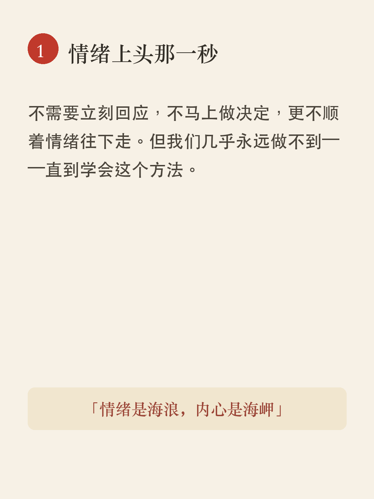
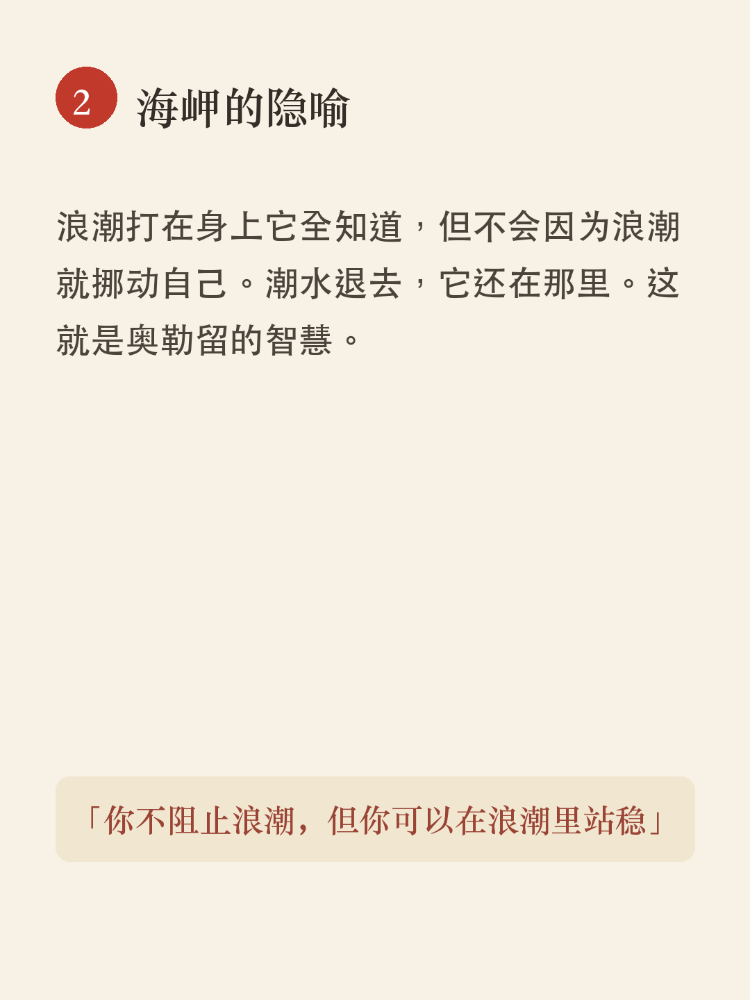
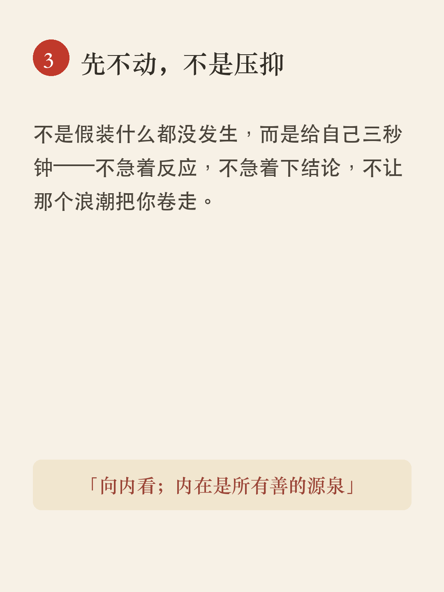
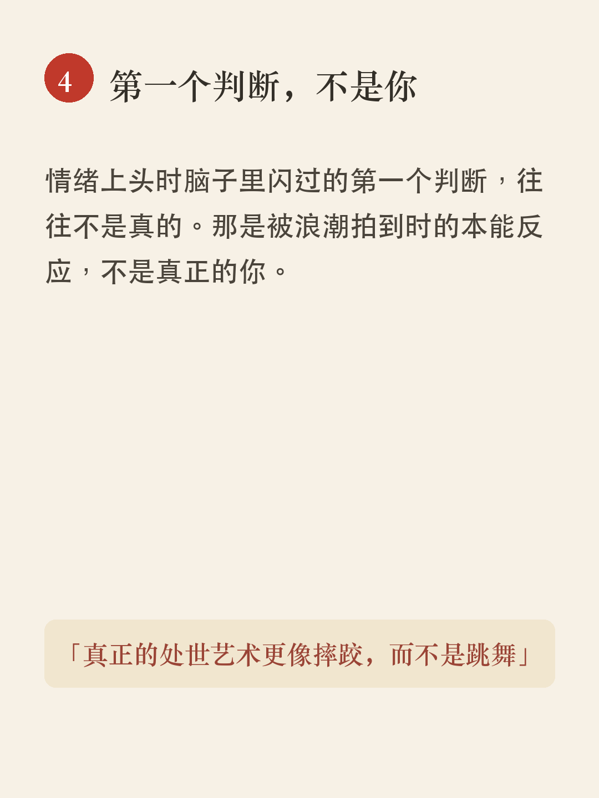
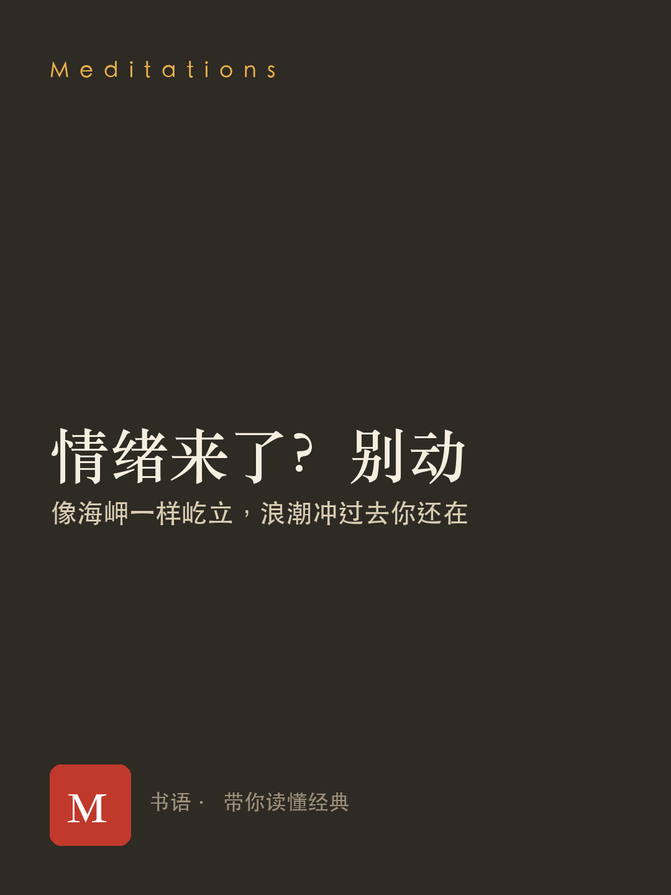
📄 配文·钩子（不剧透）
马可·奥勒留在《沉思录》里说：就算全世界都在指责你，你的内心依然可以保有安宁。
情绪就像海浪，你的内心可以成为那片海岬。不是没有感受，而是让浪潮过去，自己依然站稳。
真正厉害的人不是没有情绪，而是让情绪先过去再决定怎么动。下次情绪上头、事情砸下来的时候——先不动，look within，向内看。那个判断力一直都在，你需要的只是意识到它的存在，然后，站稳。口播稿全文
你有没有注意过，情绪上头的那一刻，你其实并不需要做任何事？
不需要立刻回应，不需要马上做决定，更不需要让自己顺着那个情绪往下走。但问题是——我们几乎永远做不到。
马可·奥勒留在《沉思录》里说过一段话，大意是：就算全世界都在指责你，就算野兽撕扯你的肉身，你的内心依然可以保有安宁。原文是这样的："Free from all compulsion in all cheerfulness and alacrity thou mayst run out thy time, though men should exclaim against thee never so much, and the wild beasts should pull in sunder the poor members of thy pampered mass of flesh."
这就是斯多葛主义的核心态度之一：情绪是海浪，而你的内心可以成为那片海岬——不是没有感受，而是让浪潮过去，自己依然站稳。
你可能会说：这也太难了吧？老板骂你，你能不气？客户甩锅，你能不慌？房贷压着、孩子闹着、凌晨三点睡不着，你能像什么都没发生一样屹立？
我没说你要假装什么都没发生。奥勒留的意思从来不是压抑，而是在情绪来临的那一刻——先不动。不急着反应，不急着下结论，不急着让那个浪潮把你卷走。
书里有一段话专门讲这个："accurately to examine every fancy that presents itself, that nothing may slip and steal in, before thou hast rightly apprehended the true nature of it."——要审慎地审视每一个涌上来的念头，在真正看清它的本质之前，不要让它悄悄溜进你的心里。
翻译成人话就是：情绪上头的时候，你脑子里闪过的第一个判断往往不是真的。那是你被浪潮拍到时的本能反应，不是你。
所以马可给出了一个具体的练习："whatsoever thou doest, thou thyself mayst like and approve thyself for it. Look within; within is the fountain of all good."——无论你做什么，你要让自己认可、赞同自己。向内看；内在是所有善的源泉。
这个练习的意思是：行动之前，先问自己一句——做完之后，我能不能认可自己？这一问，就把自己从情绪的漩涡里拉出来，站到了岬角上。
你发现没有？那些真正厉害的人，往往不是没有情绪，而是他们习惯性地让情绪先过去，自己再决定怎么动。就像书里说的："The art of true living in this world is more like a wrestler's, than a dancer's practice."——真正的处世艺术，更像摔跤而不是跳舞。摔跤不追求优美，它追求的是：无论对手怎么摔你，你都能稳住，不倒。
这才是那个比喻真正想说的：你不阻止浪潮，但你可以在浪潮里站稳。情绪来了，让它冲；事情来了，让它发生。你要做的，只是在那个当下，守住自己的判断，守住自己该做的事。
就像那片海岬。它不是没有感受——浪潮打在它身上，它全都知道——但它不会因为浪潮就挪动自己。潮水退去，它还在那里。
所以下一次，情绪上头、事情砸下来的时候，别急着动。给自己三秒钟，像马可说的，look within——向内看。那个内在的判断力，一直都在。你需要的只是意识到它的存在，然后，站稳。
84旧版洞见scene公版✓ 判官过审失去和毁灭，不过是变化和转化
🎬 你最害怕失去的东西，其实从未真正'失去'过——听我解释完你就明白了。
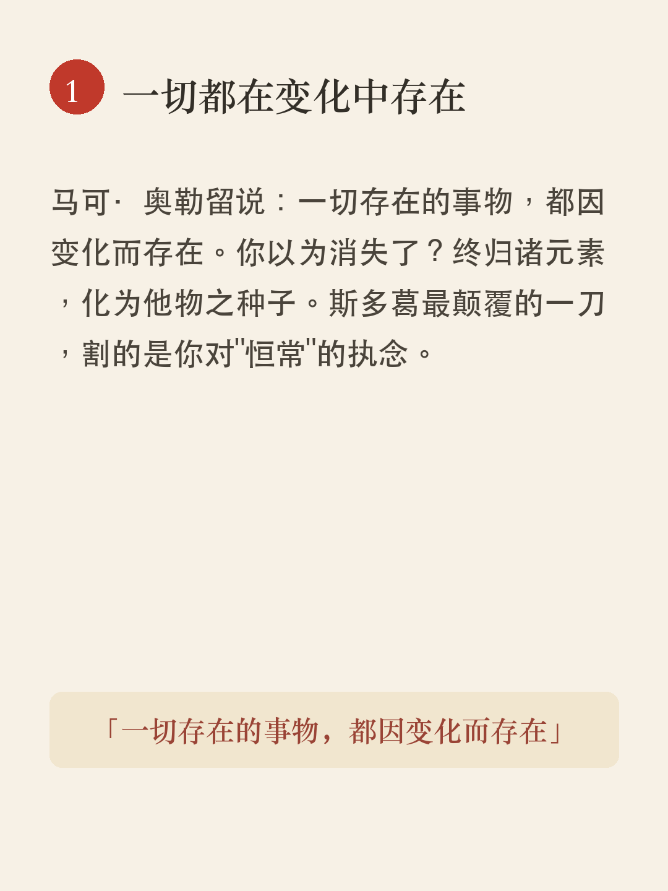
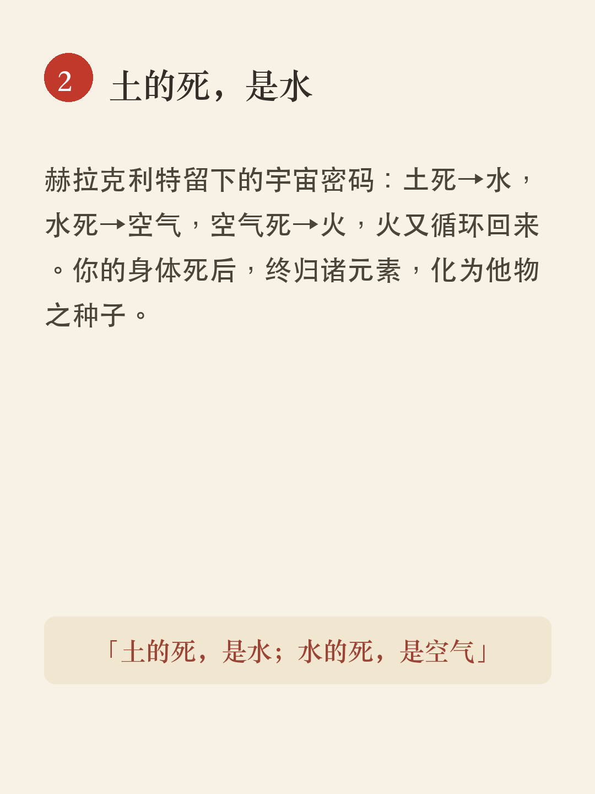
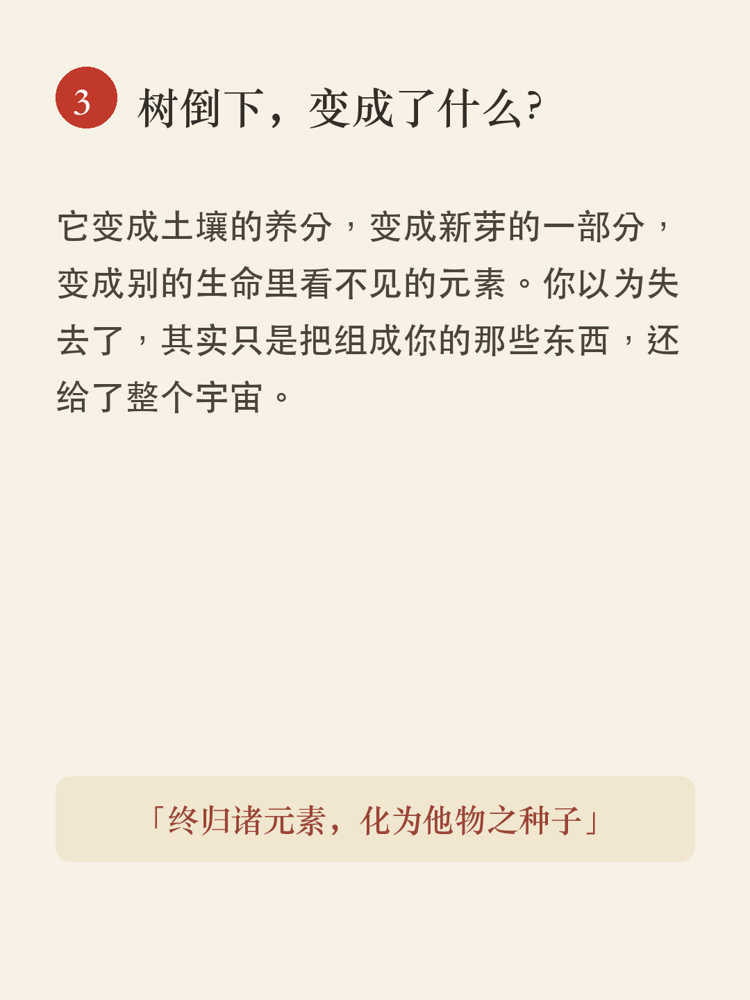
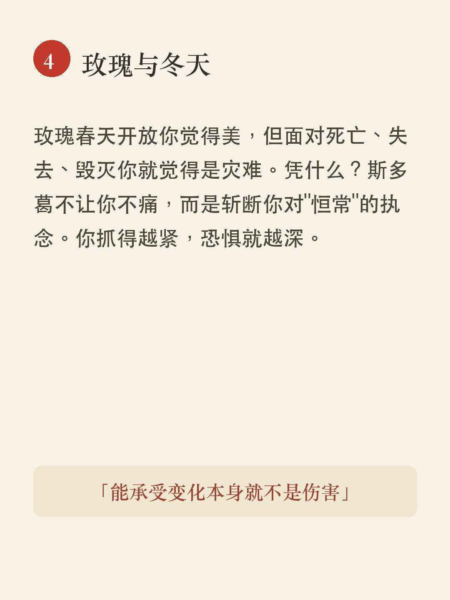
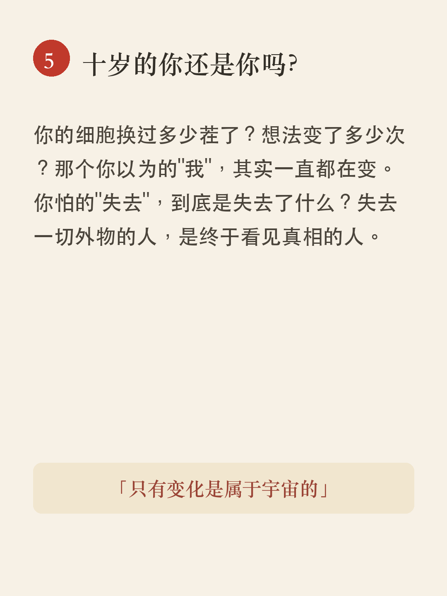
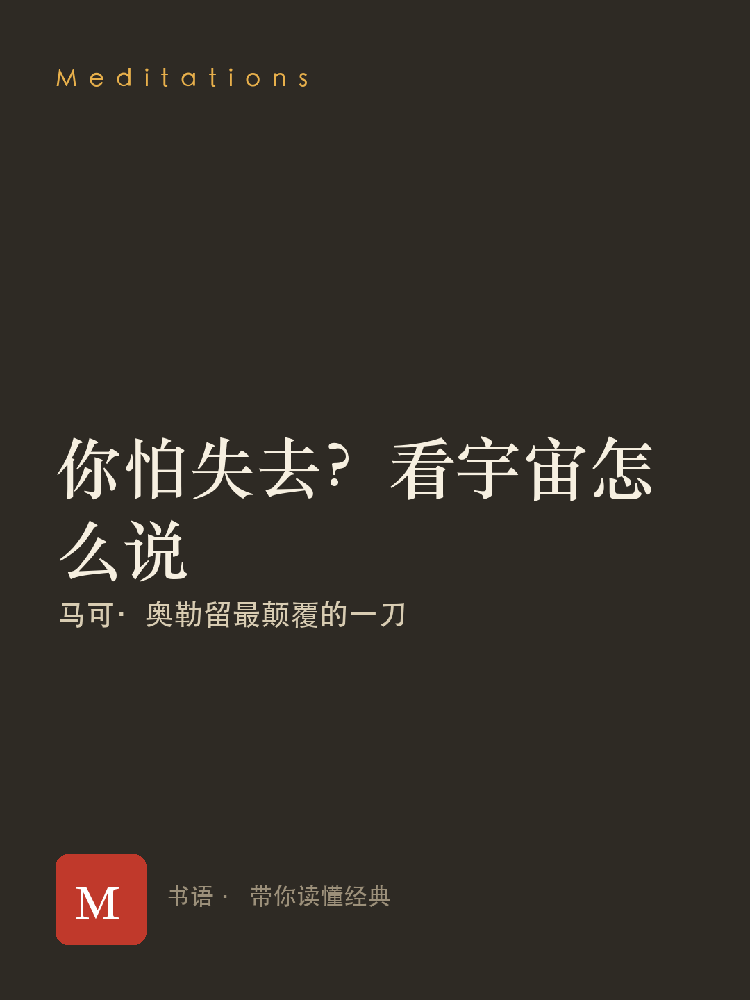
📄 配文·钩子（不剧透）
你最害怕失去的东西，从宇宙视角看，不过是自然链条中的转化。
马可·奥勒留在《沉思录》里说：一切存在的事物，都因变化而存在。你以为消失了，其实终归诸元素，化为他物之种子。
土的死是水，水的死是空气，空气的死是火，火又变回空气→水→土。你的身体死后，终归诸元素，化为他物之种子。
你怕失去，说明你觉得那东西是你的。但真相是：没有什么是你的，只有变化是属于宇宙的。
失去不过是变化的形式，而变化，是宇宙唯一不变的事。当你真正看见这一点，恐惧就会开始松动。你不需要抓住什么，因为你从来就不是那些东西。口播稿全文
你最害怕失去的东西，从宇宙视角看，不过是自然链条中的转化——听我解释完你就明白了。
马可·奥勒留在《沉思录》里说过一句话，我第一次读到的时候愣了很久。他说：“一切存在的事物，都因变化而存在”——所有东西，你以为它消失了，其实它终归诸元素，化为他物之种子。这不是鸡汤，这是斯多葛哲学最颠覆认知的一刀。
你怕什么？怕失去健康，怕失去爱人，怕失去你辛苦挣来的一切，怕有一天你不存在了。奥勒留说：你好好想想那个叫赫拉克利特的人留下的谜语——土的死，是水；水的死，是空气；空气的死，是火。然后呢？反过来，火的死又变回空气，空气变回水，水落回土。
你的身体死后会怎样？终归诸元素，化为他物之种子。一棵树倒下，它变成了什么？它变成了土壤的养分，变成了新芽的一部分，变成了别的生命里看不见的元素。你以为你失去了什么，其实你只是把组成你的那些东西，还给了整个宇宙。
有人会说：那又怎样？变成别的东西，“我”不还是没了吗？好，我们再往深看一层。奥勒留说：“能承受变化，本身就不是伤害；通过变化获得新的存在，本身也不是好处。”什么意思？死亡和毁灭，从自然的角度看，和春天开花、夏天结果是同一回事——都是自然法则的运作。玫瑰在春天开放，你会觉得美；但你不会说“太好了，它没有被冬天杀死”。可是面对死亡、失去、毁灭，你就觉得那是灾难，是不公，是你被亏待了。
凭什么？
奥勒留说：凡同样发生于依自然者与不依自然者之事，皆非善恶。死亡、疾病等乃如春之玫瑰般寻常。你恐惧失去，是因为你把“你拥有的东西”当成了“你本身”。但你仔细想想：十岁的你，和现在的你，还是同一个人吗？你的细胞换过多少茬了？你的想法变了多少次？你以为的那个“我”，其实一直都在变。那你怕的“失去”，到底是失去了什么？
所以斯多葛这一刀，割的不是你的痛苦，割的是你对“恒常”的执念。你紧紧抓住的那些东西——权力、财富、别人的认可、甚至你自己的这副躯壳——它们没有一个是恒常的。你抓得越紧，恐惧就越深。
但如果你能看见：失去，不过是变化的形式；而变化，是宇宙唯一不变的事。那会怎样？
奥勒留引述他人之语——“我半裸，且无以为食，但仍不背离理性”；随后才说：“但我说：我缺乏良好教诲与训诫之食，仍不背离理性。”失去一切外物的人，不是loser，是那个终于看见真相的人——他不需要抓住什么，因为他明白，他从来就不是那些东西。
你怕失去，说明你觉得那东西是你的。但真相是：没有什么是你的，只有变化是属于宇宙的。
82旧版映照scene公版✓ 判官过审让你痛苦的从来不是事情本身
🎬 如果你正在内耗，这条1800年前的智慧能让你彻底释怀。
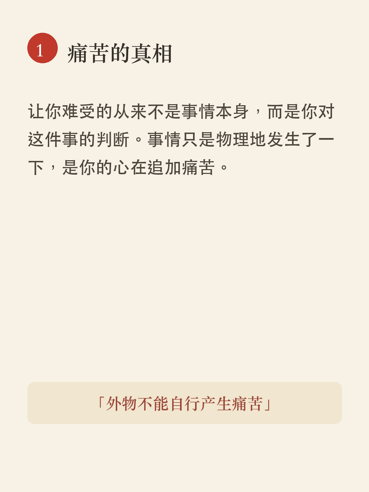
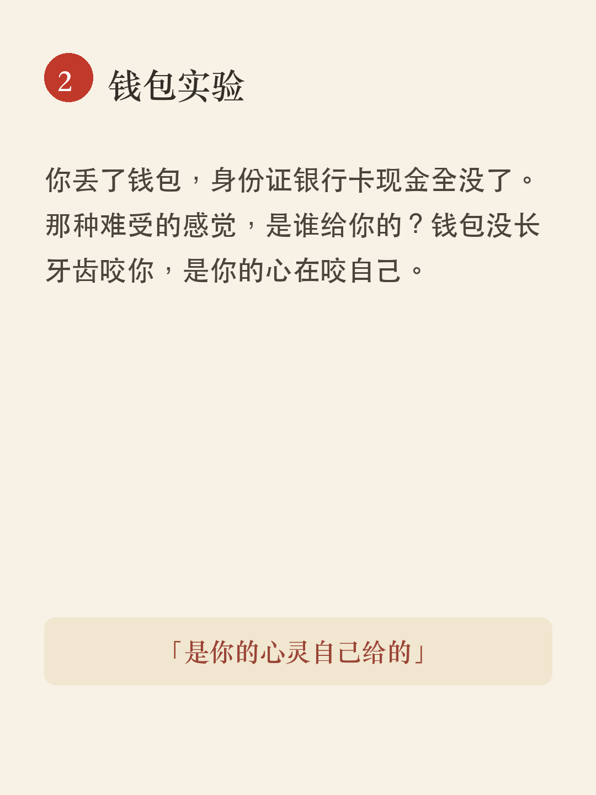
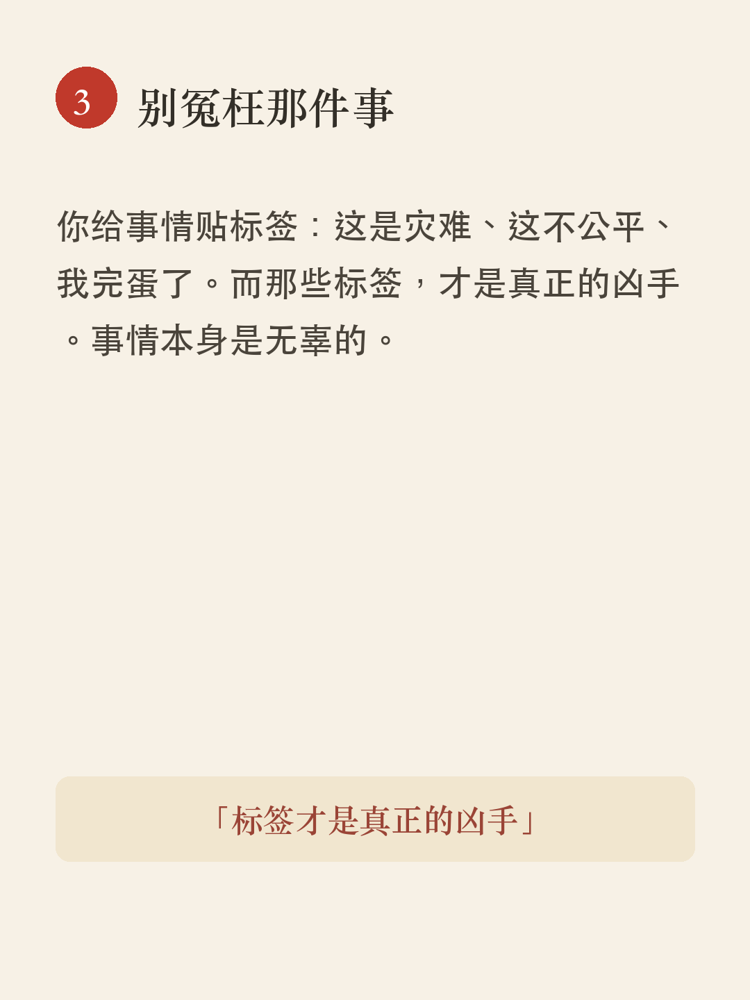
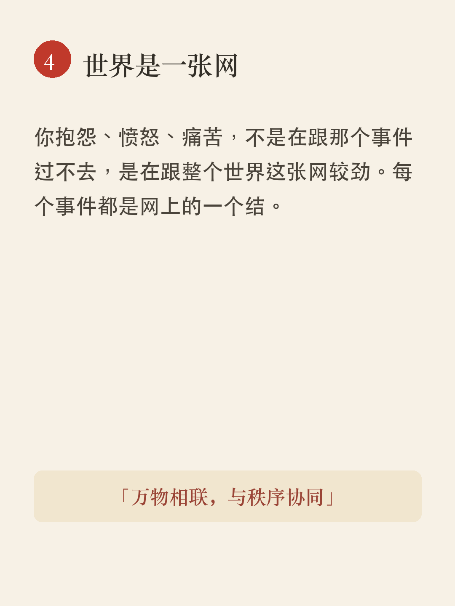
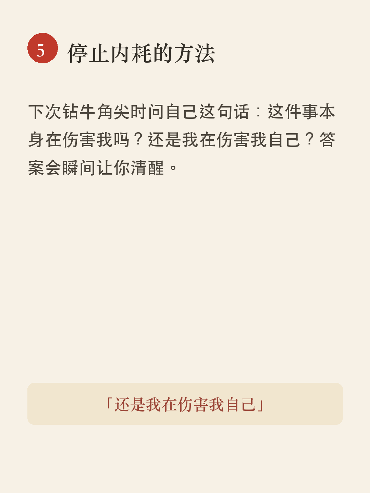
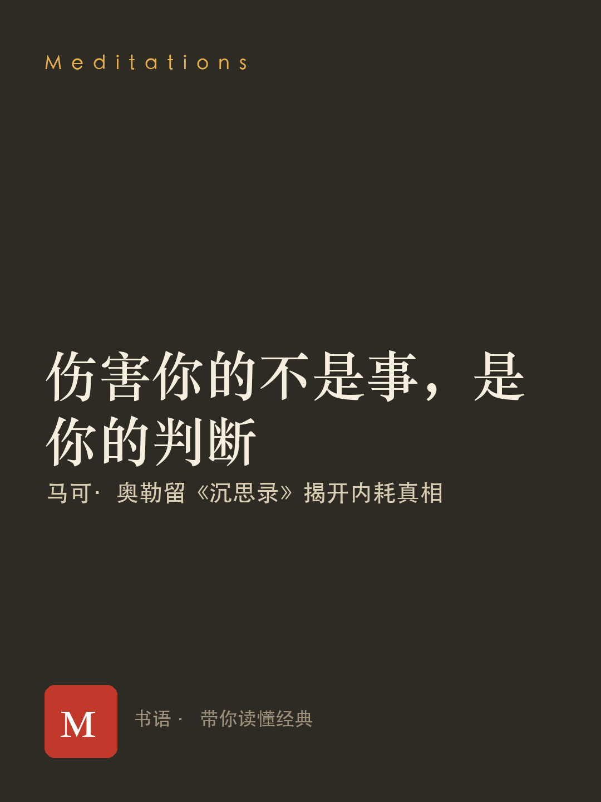
📄 配文·钩子（不剧透）
你有没有这种感觉——事情明明过去了，心里还在翻来覆去想，越想越难受，越难受越停不下来？
我以前也这样。直到读到马可·奥勒留《沉思录》里的这句话：外物本身没有力量把任何意见强加给我们，真正让心灵受扰的，是心灵自己做出的判断。
丢钱包这件事本身，它只是在物理上发生了一下，那种难受的感觉，是谁给你的？
是你的心自己给的。
下次你又钻牛角尖，试着问自己：这件事本身在伤害我吗？还是我在伤害我自己？口播稿全文
你有没有这种感觉——事情明明已经过去了，但心里还在翻来覆去地想，越想越难受，越难受越停不下来？
我以前也是这样。直到我读到马可·奥勒留《沉思录》里的这段话，大意是：**外物本身没有力量把任何意见强加给我们，它们也不能自行产生悲伤或痛苦。真正让心灵受扰的，是心灵自己做出的判断和意见。**
这句话什么意思？打个比方。你丢了钱包，里面有身份证、银行卡、现金。你第一反应是什么？心疼、懊恼、骂自己不小心。但你想过没有——丢钱包这件事本身，它只是在物理上发生了一下，它没有长出牙齿咬你，也没有伸出手打你。那种难受的感觉，是谁给你的？
是你的心灵自己给的。
奥勒留在《沉思录》里还说过另一件事：**既然万物相联，你的判断与行动应与整体秩序协同，而非陷于主观不满。** 整个世界是一张网，每一个事件都是这张网上的一个结。你抱怨、愤怒、痛苦，不是在跟那个事件过不去，而是在跟这张网较劲。
那你可能会说：说得好听，但我真的很痛苦啊。
奥勒留接着说了另一件事：**外物本身不能令理性之心受损；把之视为恶与否在于判断。** 事情发生了，感觉来了，这是自然的，你不用假装感觉不到。但"这件事伤害了我""这太不公平了""我完蛋了"——这些是判断，而判断是你可以松手的。
他还有一句更扎心的话：**智者以自身行动为乐，非他人之赞或感官之乐。** 那些被大多数人当作好东西的东西——财富、权力、名声——这些东西真的值得你为它们痛苦吗？
那什么是真正属于你的东西？你的判断，你的选择，你选择用什么方式回应这个世界——这些东西，没人能从你手里拿走。
所以回到开头那个问题：为什么你还在内耗？因为你在给一些已经过去的事情追加新的痛苦。你在心里给它们贴标签：这是灾难、这是不公平、我失败了。而那些标签，才是真正的凶手。
奥勒留告诉你：**外物本身不能令理性之心受损；把之视为恶与否在于判断。** 所以停止内耗的方法，不是等外部世界变好，而是松开你心里的那个判断。
下次你又钻牛角尖的时候，试着问自己这句话：**"这件事本身在伤害我吗？还是我在伤害我自己？"**
78旧版洞见scene公版✓ 判官过审你真正能控制的，只有你的想法
🎬 奥勒留说：世界上只有一件事完全属于你，想通了你就自由了。
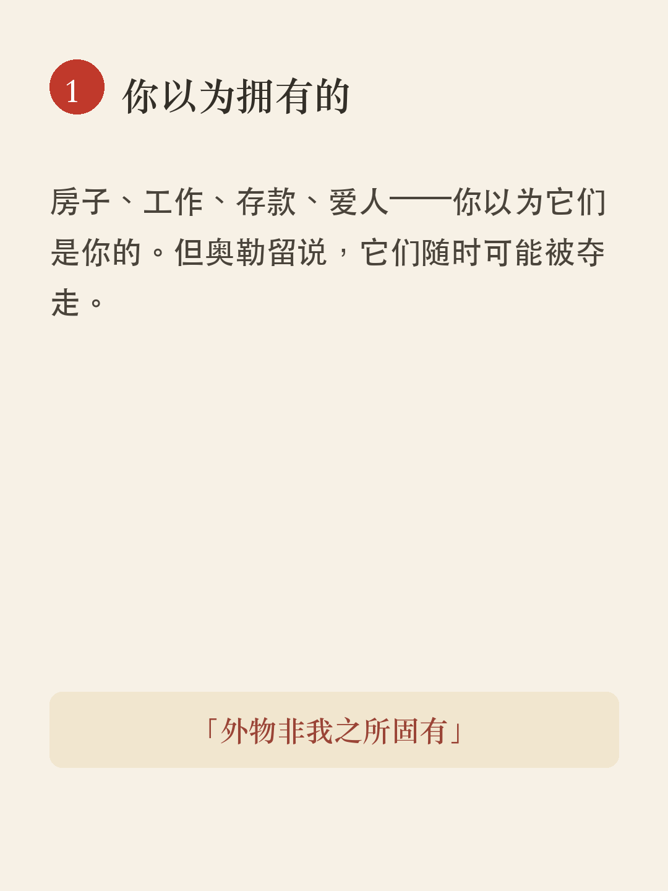
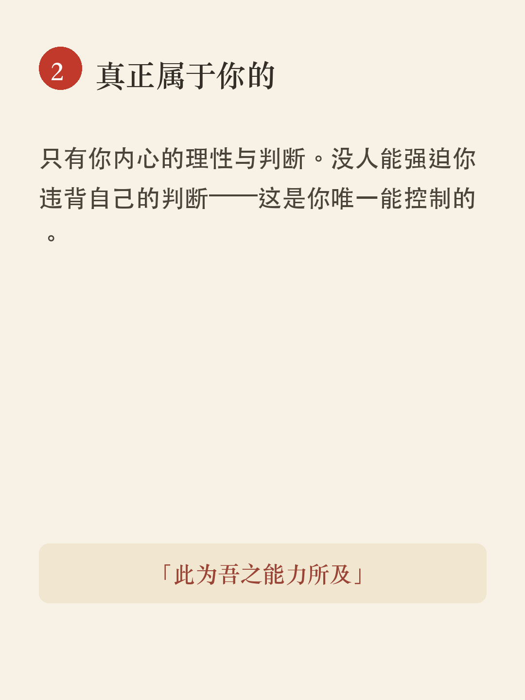
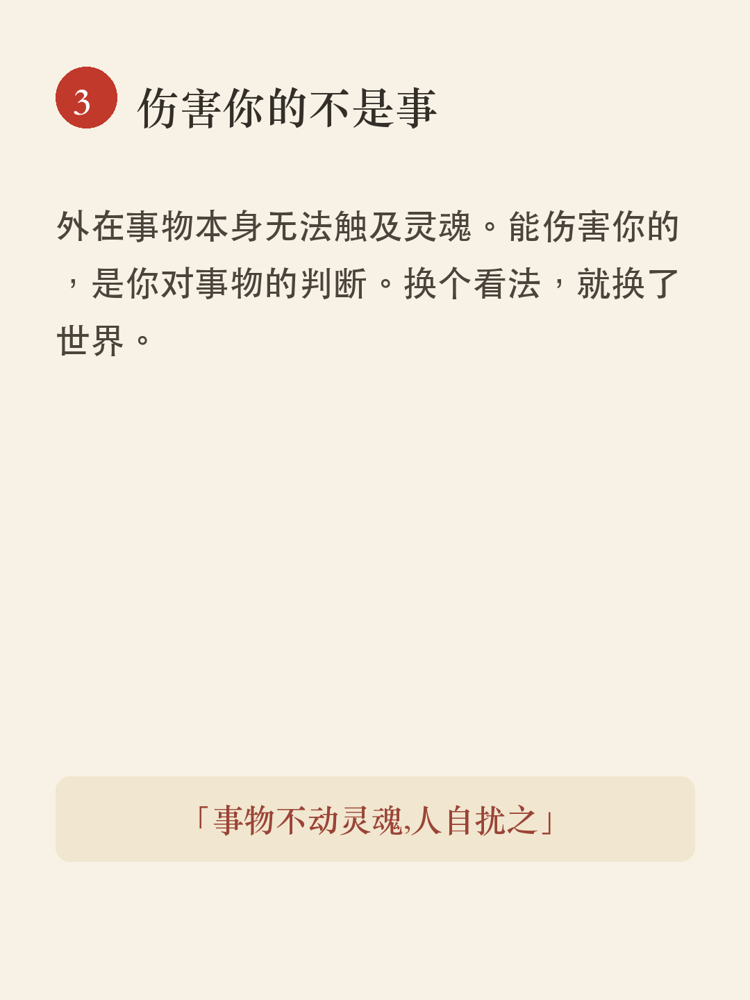
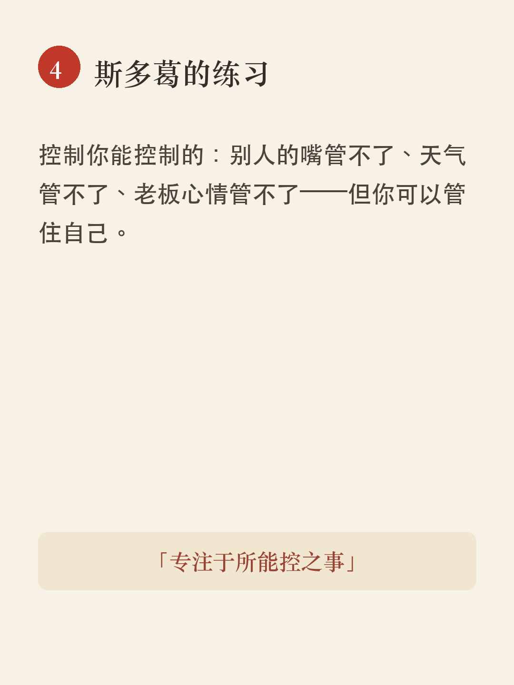
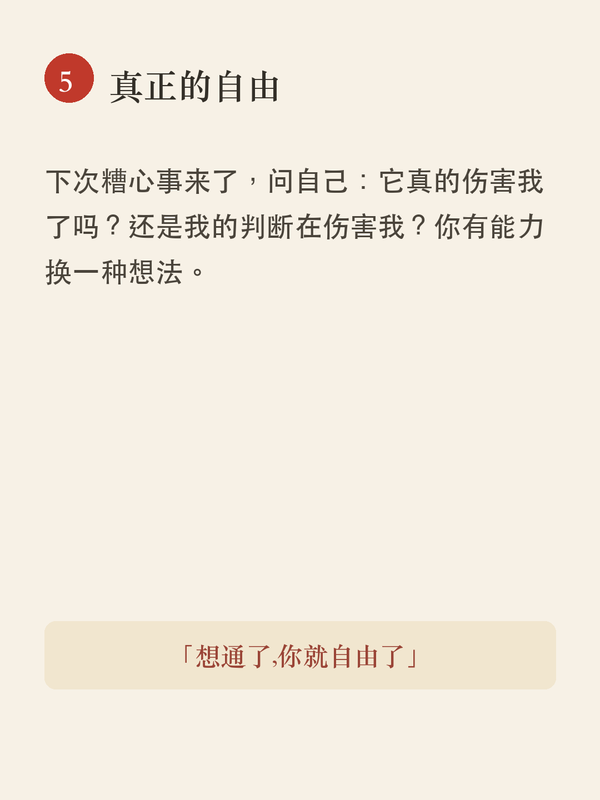
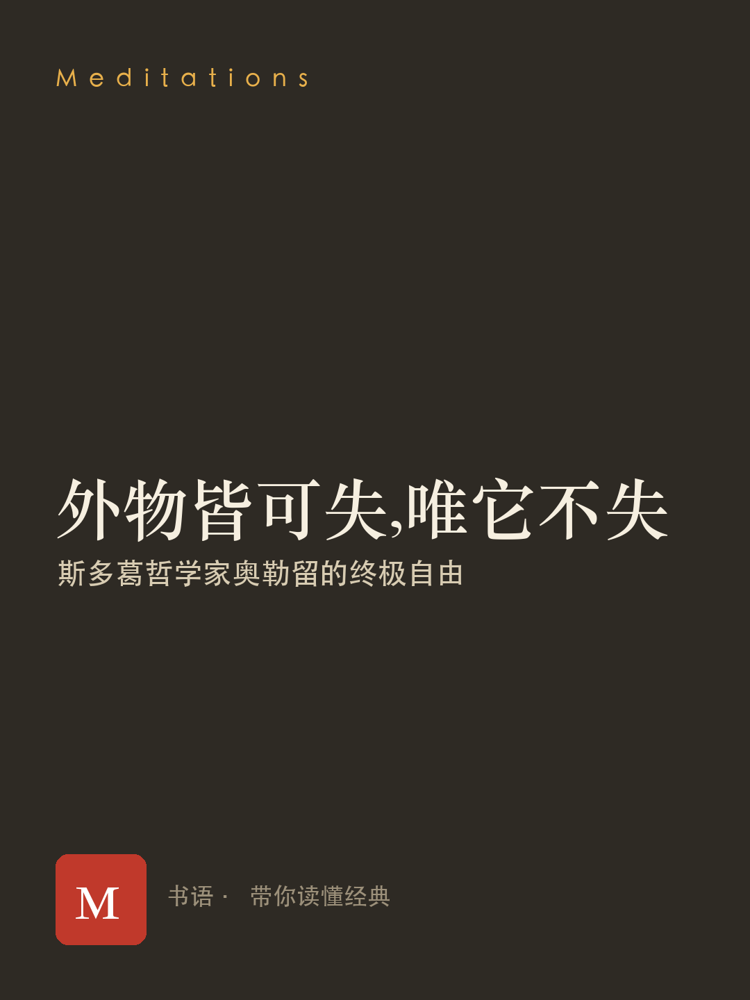
📄 配文·钩子（不剧透）
读奥勒留《沉思录》被这句话击中——你以为拥有的房子、工作、存款，随时能被夺走。但你内心的判断和理性，没人拿得走。外在事物伤不了你，能伤你的只有你自己的看法。想通这一点，你就把精力放在真正属于你的东西上——那一刻，你就自由了。口播稿全文
你以为你拥有很多东西——你的房子、你的工作、你的银行账户、你爱的人。但斯多葛哲学家奥勒留在《沉思录》里说了句让人脊背发凉的话：这些东西，严格来说，没有一样真正属于你——至少不是作为人之为人的那个部分真正所属的。
为什么？因为它们随时可能被夺走。疾病、意外、他人的背叛、市场崩盘——任何一件小事，都能在眨眼间把你以为拥有的一切化为乌有。
那什么才是真正属于你的？奥勒留在X段说："it is in thy power, to do nothing against thine own proper God, and inward spirit. For it is not in any man's power to constrain thee to transgress against him." 你完全有能力不违背自己内心的理性与判断。这是X段的核心思想，也是你唯一能真正掌控的东西。
但这里有个陷阱。我们总以为外在事件能伤害我们——奥勒留在XVI段却说："As for the things themselves, they touch not the soul, neither can they of themselves any ways either affect it, or move it. For she herself alone can affect and move herself." 外在事物本身无法触及或移动我们的灵魂。真正能影响我们的，是我们自己对事物的判断和解读。
所以奥勒留的意思是：只要我们不认为某件事是邪恶的，它就无法真正伤害我们。而我们完全有能力选择不去那样看待事物——因为X段说，没有任何力量能强迫我们违背自己的理性。
斯多葛哲学的一个重要方法，就是把精力放在你能控制的事情上。在本段文本中，X、XVI段强调内在理性与判断的可控性。你控制不了别人的嘴、控制不了天要下雨、控制不了老板今天心情好不好——但你控制得了自己怎么想、怎么判断、怎么回应。
奥勒留在XIV段说："Nothing must be thought to belong to a man, which doth not belong unto him as he is a man." 真正属于人的，是他的理性与德性——善良、公正、理性——这些东西，没有人能从你身上夺走。
所以下次遇到糟心事，别急着怪环境、怪别人、怪命运。先问自己一个问题：这件事真的伤害到我了吗？还是只是我的判断在伤害我？如果是后者，奥勒留会告诉你——你完全有能力换一个想法。
想通了这一点，你就自由了。因为你终于把精力放在真正属于你的东西上——你的判断、你的选择、你的灵魂。XVI段说，只有灵魂本身才能真正影响和推动灵魂。外物非我之为人所固有，专注德性与判断，方获真正的自由。
78旧版洞见scene公版✓ 判官过审真正的生活艺术，像摔跤不像跳舞
🎬 你精心规划的人生，为什么总是被意外打乱？马可1800年前就说清楚了。
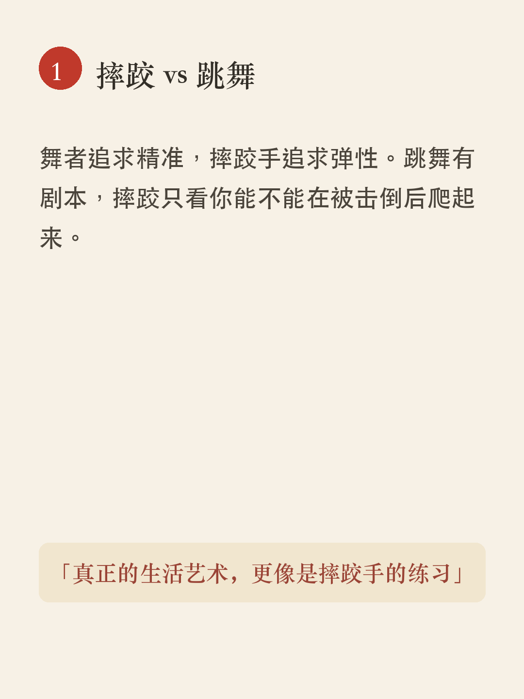
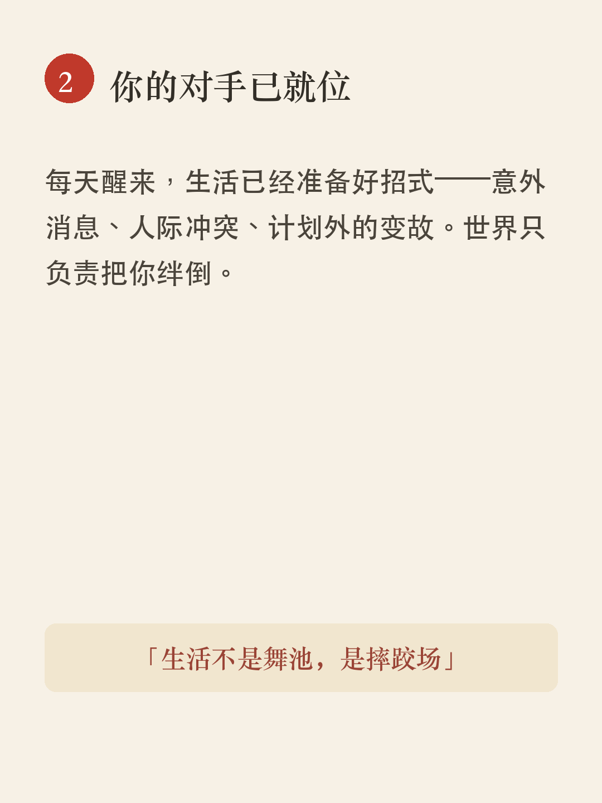
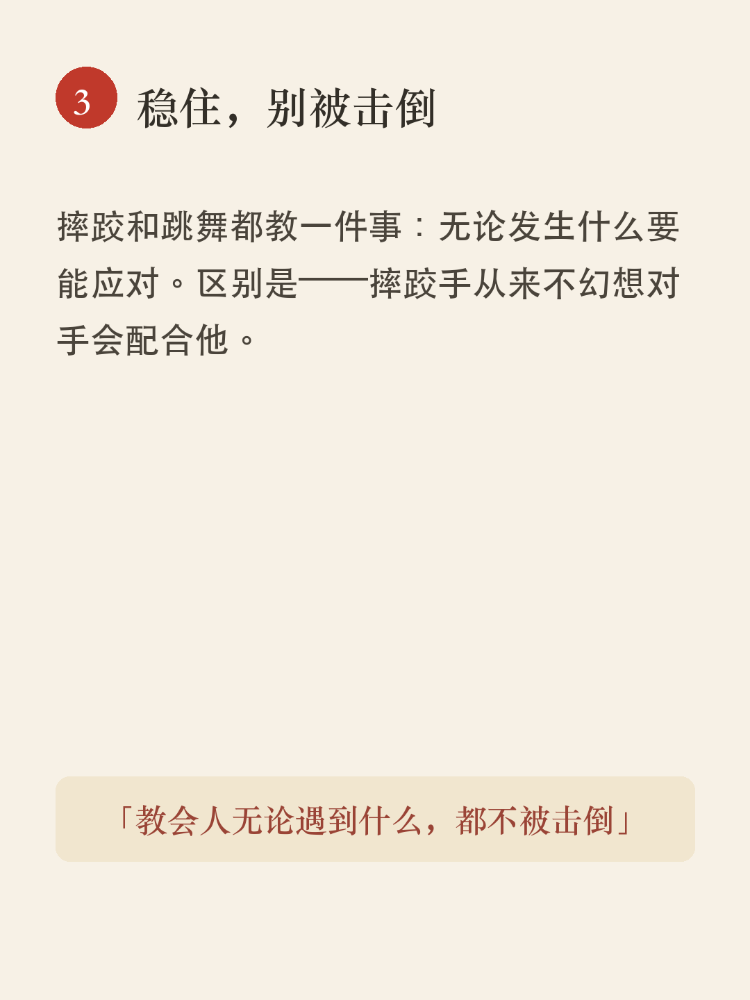
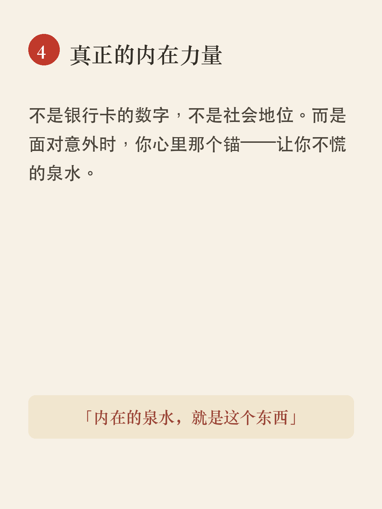
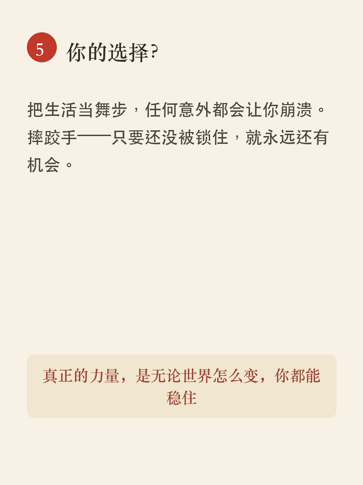
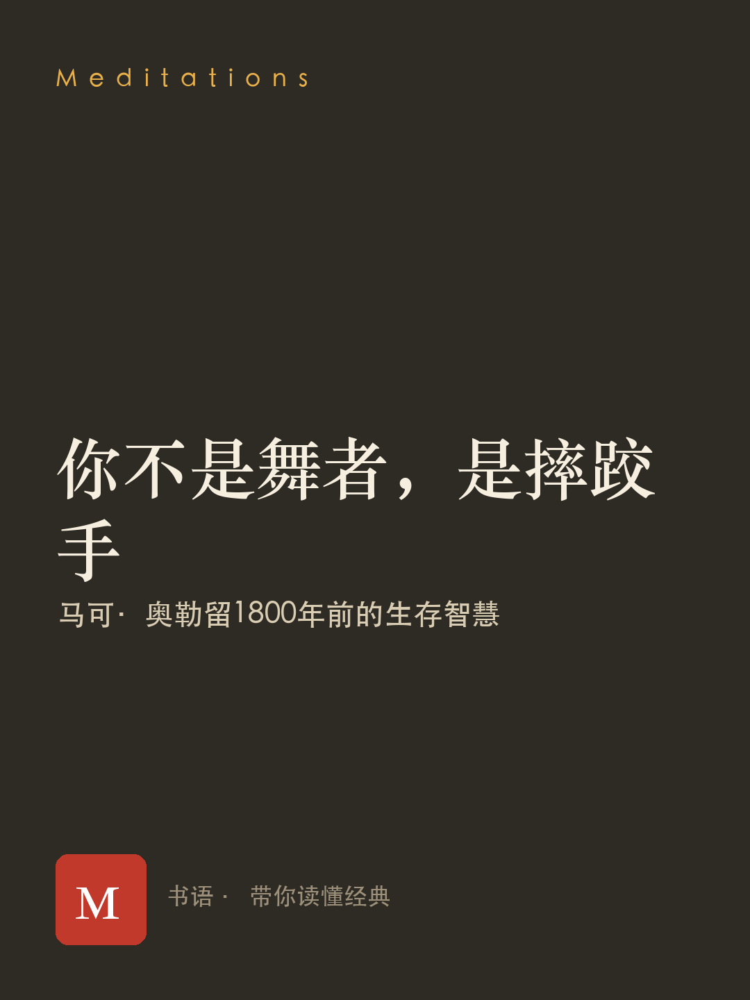
📄 配文·钩子（不剧透）
你精心规划的人生，为什么总是被意外打乱？马可·奥勒留1800年前就说清楚了——真正的生活艺术不是跳舞，是摔跤。我们都想当舞者，觉得聪明努力就能让生活按剧本走。但生活从不为你的计划让路，它每天都在给你出招。我们需要的不是精准，是弹性；不是控制，是稳住。那个面对意外时不慌的内在锚点，才是真正属于自己的力量。所以下次被绊倒，别急着抱怨——问自己：我是舞者还是摔跤手？口播稿全文
你精心规划的人生，为什么总是被意外打乱？
马可·奥勒留1800年前就说清楚了——真正的生活艺术，不是跳舞，是摔跤。
这位罗马皇帝在《沉思录》第七卷（卷七），第33节写下一句话，我第一次读到时被击中了。他说："真正的生活艺术在这个世界上，更像是摔跤手的练习，而不是舞者的练习。"
什么意思？
摔跤手永远不知道对手下一步出什么招，但他随时准备应对。跳舞也训练人对意外做好准备——两种练习的共同点正在于此：教会一个人无论遇到什么情况，都不会被击倒。但摔跤更贴近日常生活中的对抗性与不确定性。
这是两种完全不同的生存哲学。
我们大多数人，其实都想当舞者。制定计划、设定目标、优化路径，觉得只要足够聪明、足够努力，就能让生活按照我们写好的剧本走。但问题是——生活不是舞池，是摔跤场。
每天醒来，你的"对手"已经准备好了：突如其来的坏消息、突然的人际冲突、计划外的变故。这个世界从来不按你的剧本走，它只负责一件事——不断地把你绊倒，看你能不能爬起来。
摔跤这个比喻强调的是贴身对抗中的即时应变与稳住重心。
舞者追求的是精准——每一个动作都踩在点上。而摔跤手追求的是弹性——无论对手怎么推他，他都能找到一个支点重新站起来。
所以原文里那句话值得你反复咀嚼："摔跤和跳舞都教导人，无论发生什么，要能应对，要不被击倒。"区别在于——摔跤手从来不幻想对手会配合他。
这就是马可·奥勒留的洞见：真正的力量不是控制外部世界，而是无论外部世界怎么变，你都能稳住。
他说的那个"内在的泉水"，就是这个东西。不是你银行卡里有多少钱，不是你的社会地位有多高，而是你面对意外时，还有没有那个"内在的锚"让你不慌。
所以下一次生活把你绊倒的时候，别急着抱怨计划被打乱。问自己一个问题：我是舞者还是摔跤手？如果你把生活当成僵化的编排舞步，任何意外都可能让你崩溃。而摔跤手——只要还没被锁住，就永远还有机会。
76旧版人物thread公版✓ 判官过审一个皇帝的深夜独白：他比所有人都有资格抱怨，却一次也没有
🎬 这个男人坐拥全世界最强大的帝国，却每晚独自在帐篷里和自己说话。
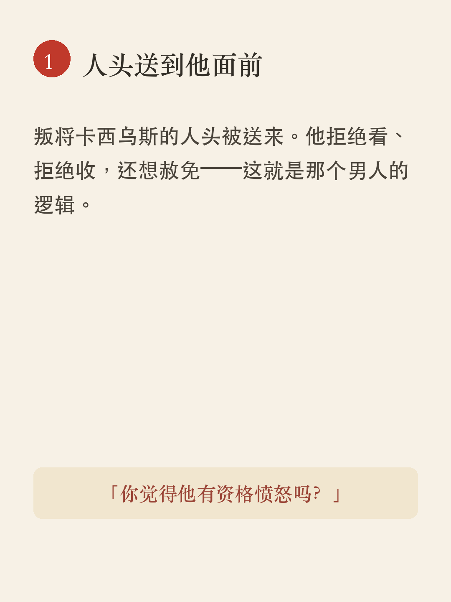
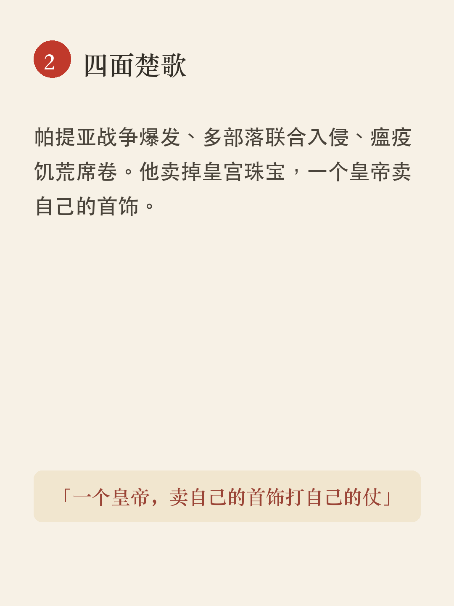
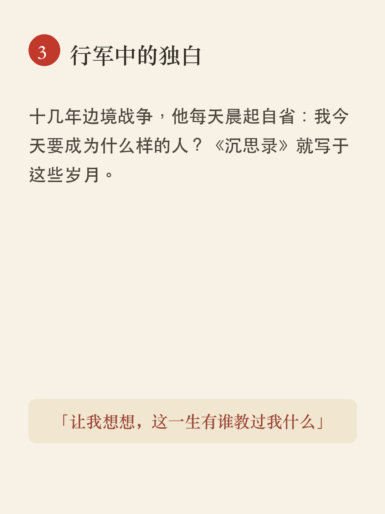
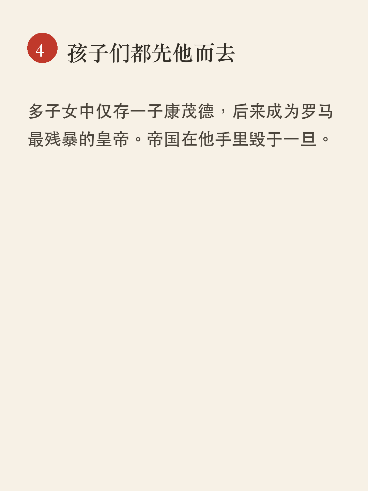
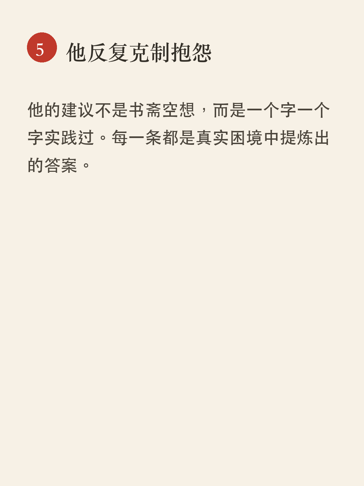
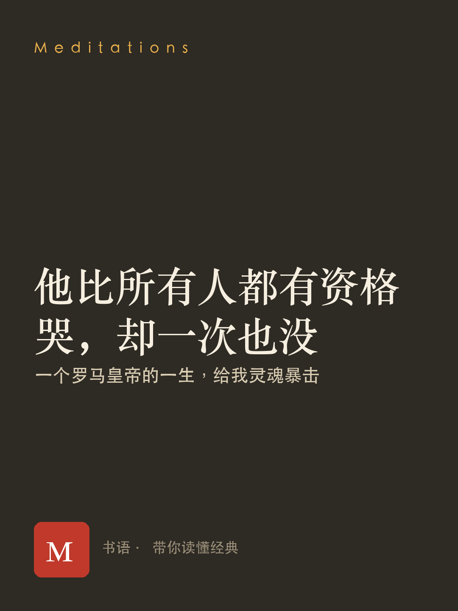
📄 配文·钩子（不剧透）
马可·奥勒留，罗马帝国五贤帝之一。
他面对的不只是叛将的人头，是四面告急的帝国，是北方部落的联合入侵，是瘟疫与饥荒，是孩子们的相继离世。
一个皇帝，卖自己的首饰打自己的仗。
而他怎么做的？他在行军岁月中，独自提笔，写下《沉思录》。每天早晨问自己：今天我要成为什么样的人？
他比所有人都有资格抱怨，但他一次也没有。
这就是他留给我们的答案——真正的强大，不是没有困境，而是面对困境时，依然选择克制与清醒。口播稿全文
公元175年的一天，有人从东方给马可·奥勒留送来一个包裹。包裹里是一颗人头——阿维狄乌斯·卡西乌斯的头颅。那个刚刚宣布自己为皇帝、试图颠覆整个帝国的人。叛将卡西乌斯的头颅，就摆在他面前。
马可·奥勒留拒绝了。他拒绝看它，拒绝收下这份"礼物"，拒绝见那些行凶者。他称赞卡西乌斯的才能，还盼望有机会赦免他。
这就是那个男人的逻辑。你觉得他有资格愤怒吗？让我告诉你他有什么资格愤怒。
161年他继承皇位后，迎接他的不是万众欢呼，是四面告急。帕提亚人在东方发动叛乱，162年摧毁了整整一个罗马军团并入侵叙利亚。北部边境，多个强大部落联合入侵——马克曼尼人、夸迪人、萨尔马提亚人、卡蒂人、雅齐格斯人。罗马城里，瘟疫从东方传回来，饥荒因洪水冲毁大量谷物而蔓延。他甚至被迫卖掉皇宫里的珠宝来维持局面。
一个皇帝，卖自己的首饰打自己的仗。
然后是卡西乌斯。175年，他最信任的东部总督，刚刚在帕提亚战争中赢得荣誉的将领，听信有人误报皇帝已死，就直接宣布自己为帝。帝国在内战边缘摇摇欲坠。
你要问的是：在这一切发生的时候，他在哪里？他在做什么？
他在行军岁月中，独自提笔，写下了这些话——
第一卷。他列了一份感恩清单。整整齐齐地，一个名字一个名字，一个教诲一个教诲。他从祖父那里学会了温和与克制愤怒，从母亲那里学会了虔诚与仁慈，从老师那里学会了不被谄媚之词所欺骗。
这份清单里的每一句话，都对应着真实发生过的事。他不是坐在书斋里空想哲学的学者。学界普遍认为《沉思录》的大部分内容写于前线岁月，但具体卷次未详。他可能正指挥着一场持续了十几年的边境战争。他可能正看着自己的军团染上瘟疫，一个接一个地死去。他可能正听说东部有一位自己亲手提拔的将领造了反。
而他坐下来说：让我想想，这一生，有谁教过我什么。
第五卷开篇有"晨起履职"的自省。每天早晨他问自己：我像一头按本能行事的野兽那样，只凭愤怒和恐惧驱动吗？
你听出来了吗？这个问题的潜台词是——他自己完全清楚，自己是有可能放弃的。有可能像一头受伤的野兽那样，只凭本能活着，只凭愤怒和恐惧驱动。但他每天早晨强迫自己坐下来，问自己：今天的工作是什么？今天我要成为什么样的人？
他死的时候，多个孩子中只有一个还在世。那个孩子叫康茂德，后来成了罗马历史上最残暴的皇帝之一。十几年的帝国在他手里毁于一旦。而马可·奥勒留连最后看一眼这崩塌的力气都没有了——他死在潘诺尼亚的军营里，180年3月17日。
这就是那个男人的一生。
帝国最强大的时刻，他四面楚歌。他最信任的人背叛了他。他的妻子在东征途中病逝。他的孩子们几乎都先他而去。他的身体一直不好，但他活了快六十年——靠的不是任何好运，而是每天在行军岁月中写下的那些字。
所以你问我：他的建议有没有用？
他的建议不是写给一个安逸的中产阶级的自我提升手册。他的不少段落写于前线征战期间，每一条建议都是在多年征战的岁月里，一个字一个字地实践过，然后才写下来的。
他反复要求自己不要抱怨，克制情绪。
76旧版映照scene公版✓ 判官过审你还在追求被记住？连亚历山大大帝都被遗忘了
🎬 你有没有想过，要留下点什么？马可说：你留下的东西，你自己看不见了。
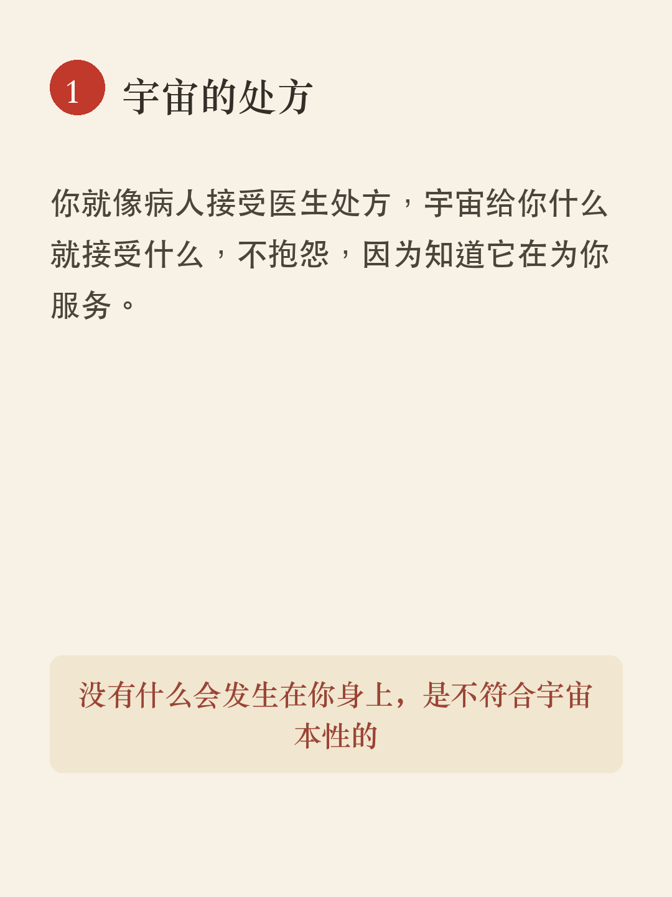
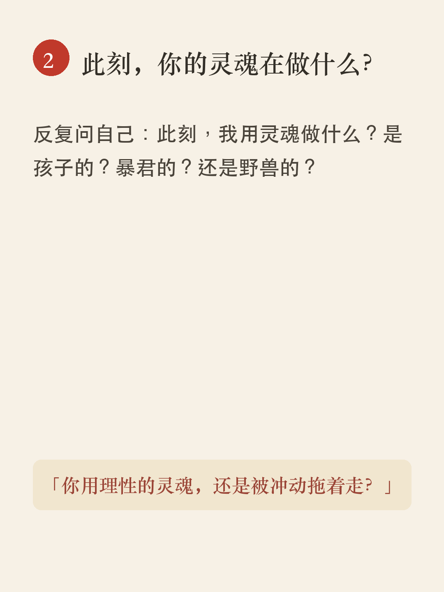
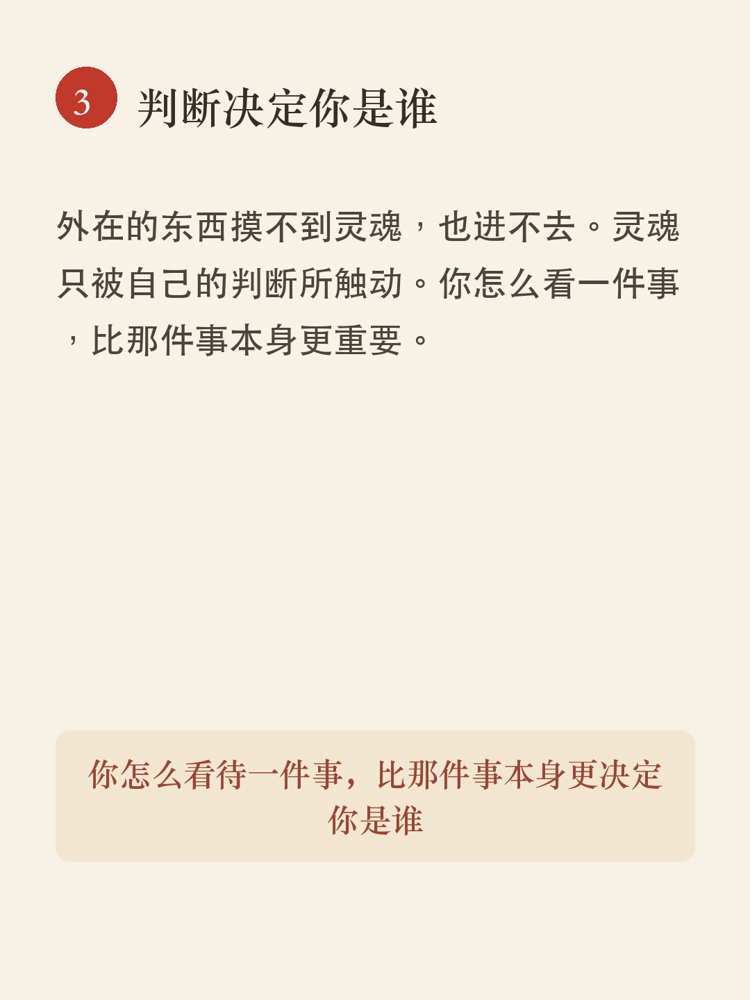
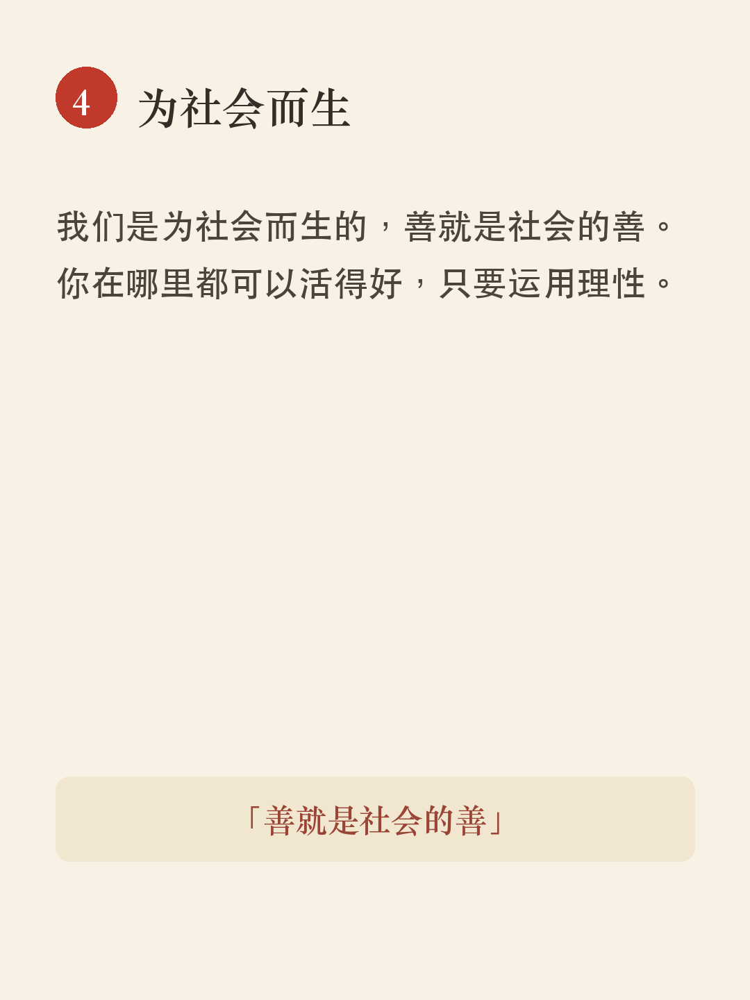
📄 配文·钩子（不剧透）
你有没有过那种时刻——深夜刷手机，突然停下来想：我这辈子，能留下点什么？连亚历山大大帝都被遗忘了，你还执着于被记住？马可·奥勒留在《沉思录》里给你一个扎心的答案：宇宙给你的处方，不要抱怨，接受它。他说，外在的东西摸不到灵魂，灵魂只被自己的判断所触动。你怎么看一件事，比那件事本身更决定你是谁。所以别为流逝的东西浪费情感，真正的行动不在过去，在当下你如何运用理性。你今天对谁好一点，那个选择，是你的。你的反应、你的判断，此刻，就是你能拥有的全部。口播稿全文
你有没有过那种时刻——深夜刷手机，突然停下来想：我这辈子，能留下点什么？
马可·奥勒留，两千年前的罗马皇帝，在《沉思录》第六卷里给你的答案很直接——他说：没有什么会发生在你身上，是不符合宇宙本性的。
不是安慰。是事实。
他说：你就像一个病人，接受医生的处方。有人被开了骑马做处方，有人被开了冷水浴。你不会抱怨处方本身。你接受它，因为你知道它在为你能恢复健康而服务。
宇宙给你什么，你就接受什么。不是因为它总是好的，而是因为这是自然的进程。（VI.6）
然后他问你一个问题，一个你需要反复问自己的问题：此刻，我用我的灵魂做什么？
是一个孩子的灵魂？一个女人的？一个暴君的？还是一个野兽的？
你用理性的灵魂，还是被冲动和外在的东西拖着走？（VI.XI）
他说：外在的东西摸不到灵魂，也进不去。灵魂只被自己的判断所触动。你怎么看待一件事，比那件事本身更决定你是谁。
所以——不要为流逝的东西浪费情感。真正的行动、真正的善，不在过去，在当下你如何运用理性。
第六卷里，他说：我们是为社会而生的，善就是社会的善。你在哪里都可以活得好，只要运用理性。而遇到障碍——别人刁难你、世界不如意——你的mind可以把每一个障碍变成道路。
这就是他给你的：不是虚无。是此刻。是此刻你用理性面对眼前的人与事。不是追逐外在的成就或结果。
（VI.XIV）你的nature不要求那些。你的nature要求的是作为一个理性存在，去行动。
你今天对谁好一点，那个选择，是你的。
你的反应、你的判断，此刻，就是你能拥有的全部。
74旧版洞见scene公版✓ 判官过审你的职业是什么？做个好人
🎬 如果有人问你职业，你只能回答两个字，你会说什么？
📄 配文·钩子（不剧透）
一个罗马皇帝每天问自己：你的职业是什么？他的答案是：做个好人。
不是心灵鸡汤，是1800年前帝国统治者的标准答案。善良不是对世界的妥协，是建立在深刻理解之上的方法论。真正的快乐不在于你拥有什么，而在于你在做什么。善良不是生活的加餐，善良是生活本身。这个答案，两千年没变。今天你也可以试试。口播稿全文
如果有人问你职业，你只能回答两个字，你会说什么？
大部分人的第一反应可能是：会计、老师、程序员、销售……一份写在名片上的工作。
但如果只准说两个字呢？
马可·奥勒留——《沉思录》的作者，罗马皇帝——的答案是：“做个好人。”
这不是心灵鸡汤。这是一千八百年前，一个统治过帝国的人，给出的标准答案。这个答案，颠覆了我们对“职业”的理解。
职业，不是你谋生的手段，而是你存在的核心。
奥勒留在《沉思录》第四卷里，有一句几乎被所有版本忽略的话。他写道：“你的职业是什么？做个好人。”紧接着他又追问：“怎样才能真正做到善良？但需要依靠某些定理和教义——有些关涉宇宙的本性，有些关涉人本身的特殊构成。”
这意味着什么？善良，是有方法的，不是盲目的。
善良，需要你理解两件事：第一，宇宙是什么样的；第二，人是什么样的。知道宇宙无常，你就不会执着；知道人天生具有理性，你就会相信每个人都有向善的能力。善良不是对世界的妥协，而是建立在对世界的深刻理解之上。
但理解不是终点。善良，是每天都要做的事。
奥勒留还说：“如果理性的指挥部分行使正义，并因此在内心获得安宁，它就会完全满足于自身，不需要任何其他东西。”
这句话藏着斯多葛学派最深的洞见：真正的快乐，不是你拥有什么，而是你在做什么——做你该做的事。善良的人，不需要从外部寻找快乐，因为善良本身就是快乐的源头。
所以，“做个好人”不是一个高不可攀的理想，而是你每天都要做的本职工作。那种“等我有钱了再善良”“等我退休了再善良”的想法，是对“职业”最大的误解。善良不是生活的加餐，善良是生活本身。
原文那句话写了两千年了：“你的职业是什么？做个好人。”
不是标语，不是鸡汤，是一个皇帝对自己每天的提醒。
人真正的快乐，在于做人该做的事。而做人该做的事，就是善良。这个答案，两千年没变。今天你也可以试试。
72旧版映照scene公版✓ 判官过审最好的复仇，就是不变成他们那样的人
🎬 你恨的那个人，其实不需要你去惩罚他。
📄 配文·钩子（不剧透）
有人伤过你吗？你心里咽不下这口气，日日夜夜想着怎么报复他。
但真相扎心——你恨的那个人，其实根本不需要你去惩罚他。他的行为，最先、最深地伤害的是他自己。
最可怕的是：你以为你在报复他，其实你在用他的错误，一点点毁掉你自己。
你变得易怒、多疑、刻薄，活成了你最讨厌的样子——而他可能根本不知道。
别人怎么伤害你，从来无法定义你。定义你的只有一件事：当那些事发生的时候，你选择了成为什么样的人。
你不需要惩罚他，不需要成为他。你只需要——不变。
这比任何报复都更难，但也更有效。因为你赢的不是一场战斗，你赢的是你自己。口播稿全文
有人伤过你吗？
你心里咽不下这口气，日日夜夜想着怎么报复他、怎么让他付出代价。
但我想告诉你一个你可能不想承认的真相——**你恨的那个人，其实根本不需要你去惩罚他。**
马可·奥勒留在《沉思录》里说过一句话：有人得罪了你？那得罪本身是对他自己的伤害。是他自己恶心、是他自己肮脏、是他自己的灵魂被污染了。
你感受到了痛苦，这没错。但那个人的行为，最先、最深地伤害的，是他自己——不是你的本性。
而最可怕的是：你以为你在报复他，其实你在用他的错误，慢慢地、一点一点地，毁掉你自己。
你变得易怒、多疑、刻薄。你开始用他的逻辑来过你的日子。你变成了你最讨厌的那种人。而你恨的那个人，可能根本不知道你变成了这样。
**这才是真正的失败——不是输给他，而是你让他改变了你。**
但奥勒留还说了另一句话。
他说：无论你的身体被刀割还是被火烧，让那个能评判这一切的部分保持安静。无论发生什么，都不要让那个部分被污染。
**别人怎么伤害你，从来无法定义你。定义你的只有一件事：当那些事发生的时候，你选择了成为什么样的人。**
这才是真正高级的力量。
不是你还击了，而是你的本能根本不是还击。
就像奥勒留写的：你必须像大海中的岬角，无论浪怎么拍打，你站在那里不动，时间久了，浪反而静了。
真正的不可战胜，不是压倒别人——而是不管别人怎么压你，你都不变。
你恨的那个人，迟早会被他自己的选择反噬。这是宇宙的规律，奥勒留早就看透了——那些曾经不可一世的医生、占星师、国王、将军，最后都一样变成了尘土。没有人能逃过。
所以你看，**你不需要惩罚他。你不需要成为他。你只需要——不变。**
这比任何报复都更难，但也更有效。因为你赢的不是一场战斗，你赢的是你自己。
从今天起，别再问“他凭什么这样对我”。
问自己：**“我想成为什么样的人？”**
答案就在这个选择里。而那个答案，值得你守护一生。